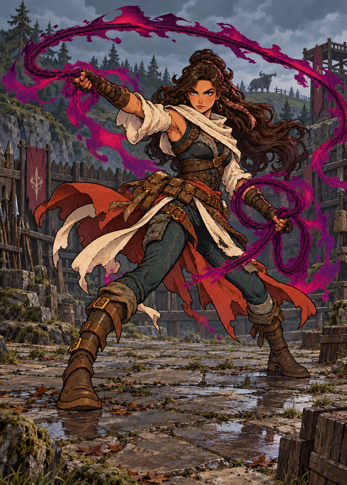
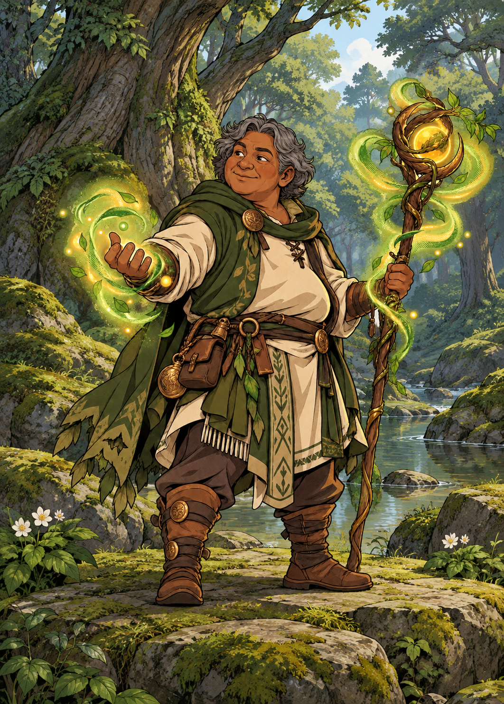
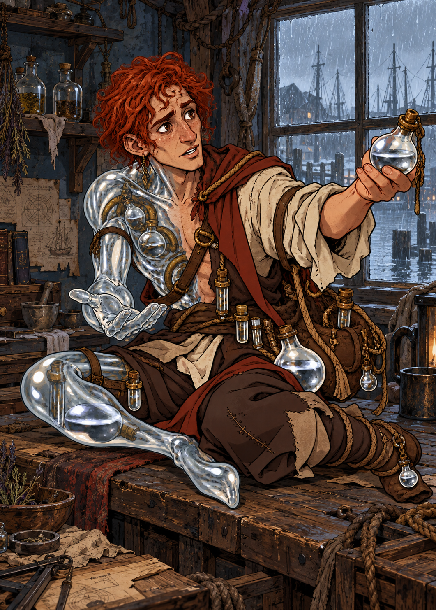
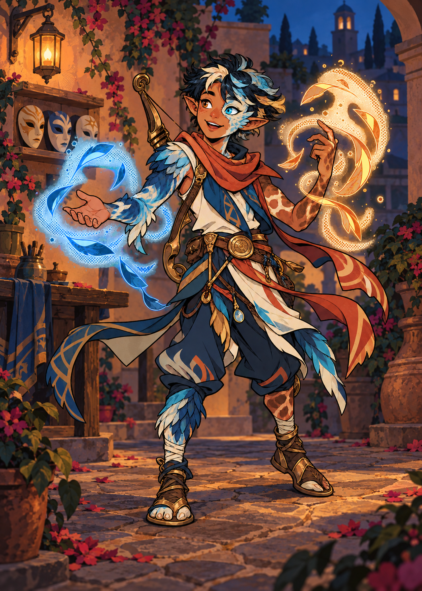
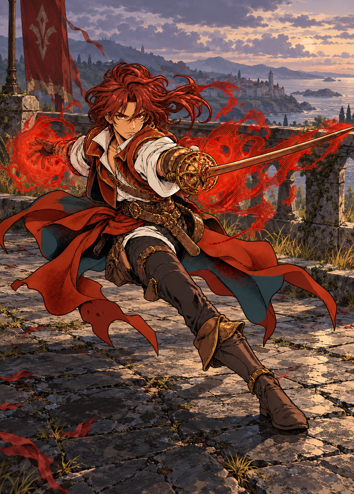
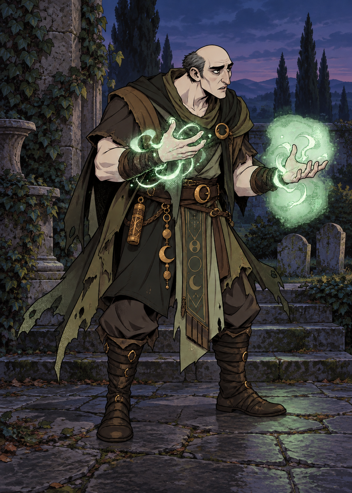
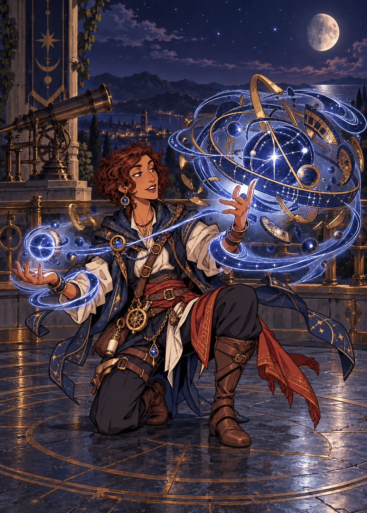
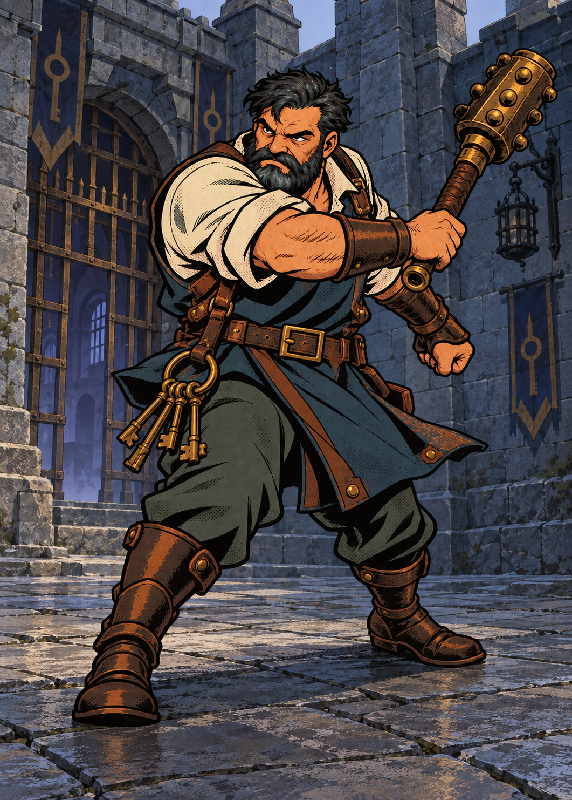
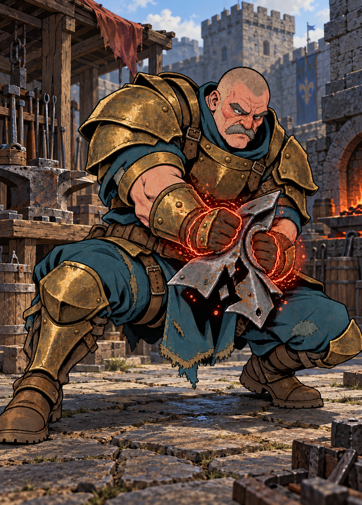
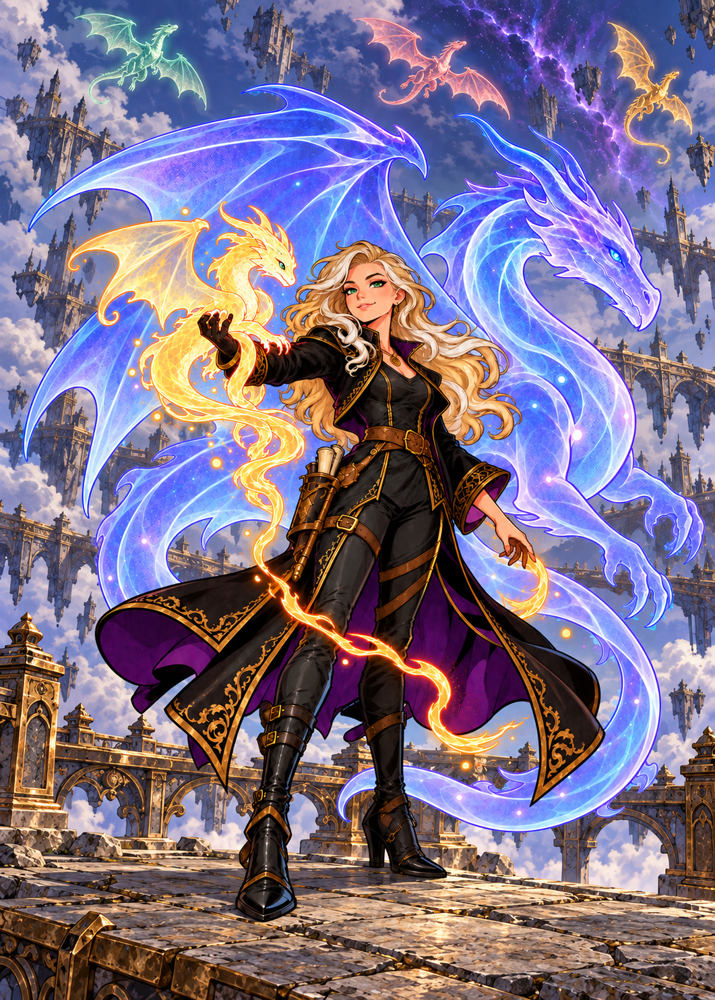

Lyandra, a Domadora de Guerra

Composição original preservada; somente fundos refeitos. Ciantia: modelo da expansão ainda bloqueada.
Todas as 94 artes concluídas · Nove cenas reservadas para cartas futuras









